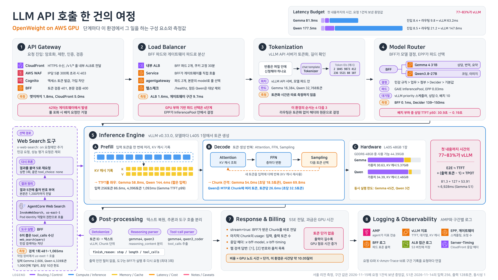
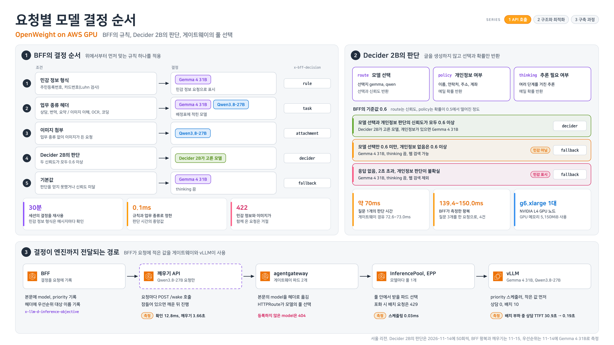
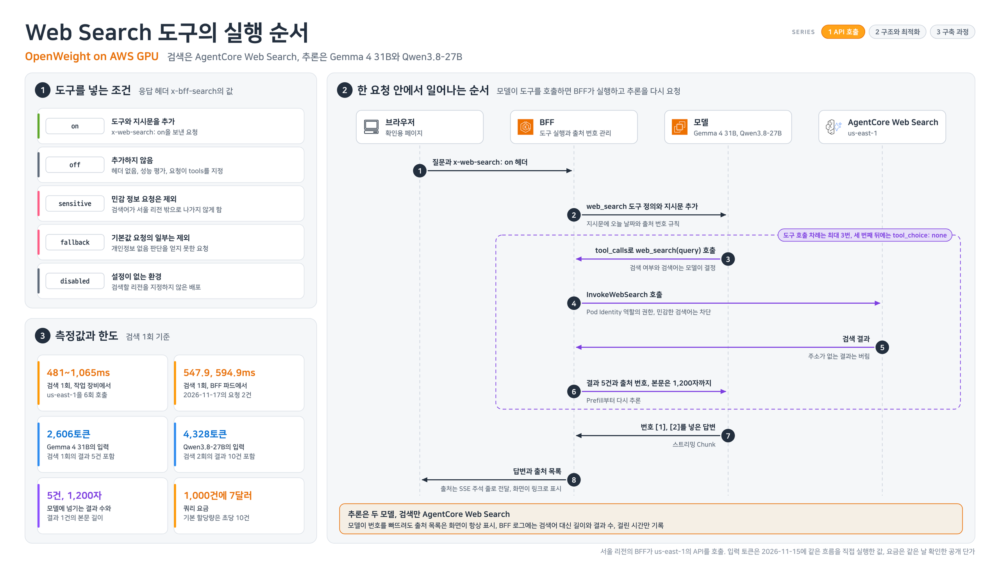
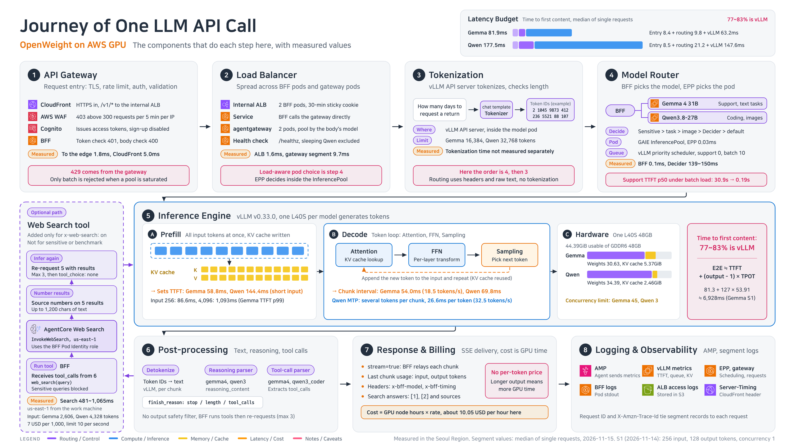

OpenWeight on AWS GPU 1부: Amazon EKS와 vLLM의 LLM API 호출 8개 단계OpenWeight on AWS GPU, Part 1: The eight stages of an LLM API call on Amazon EKS and vLLM
오픈 웨이트 모델을 GPU에서 직접 서빙하면 API 호출 한 건은 어디를 지나고 시간은 어디에 쓰일까요? Amazon EKS에서 vLLM으로 Gemma 4 31B와 Qwen3.8-27B를 서빙하는 환경에서 호출 한 건을 8개 단계로 나눠 단계마다 맡은 구성 요소와 측정값을 정리했습니다. 모델은 BFF의 규칙과 Strands Decider 2B가 정하고 웹 검색은 BFF가 도구로 실행하며 첫 내용까지의 시간 가운데 77%와 83%는 vLLM이 사용했습니다.When you serve open-weight models on your own GPUs, where does one API call go and where does its time go? This post splits one call into 8 stages in an environment that serves Gemma 4 31B and Qwen3.8-27B with vLLM on Amazon EKS, and lists the component and the measured values for each stage. BFF rules and Strands Decider 2B decide the model, the BFF runs web search as a tool, and vLLM took 77% and 83% of the time to first content.
- 8개 단계: 요청 진입, 부하 분산, 토큰화, 모델 결정, 추론, 후처리, 응답과 비용, 기록과 관측입니다. 이 환경에서는 모델 결정이 토큰화보다 먼저 실행됩니다.8 stages: request entry, load balancing, tokenization, model decision, inference, post-processing, response and cost, logs and metrics. In this environment the model decision runs before tokenization.
- 모델 결정: BFF가 민감 정보 규칙, 업무 종류, 이미지 첨부, Decider 2B의 판단, 기본값의 순서로 정합니다. Decider 2B에 묻는 왕복은 139.4ms에서 150.0ms였고 세션의 첫 요청에서 한 번만 묻습니다.Model decision: the BFF decides in the order sensitive data rule, task type, image attachment, Decider 2B judgment, default. The round trip to Decider 2B took 139.4 ms to 150.0 ms and happens once, on the first request of a session.
- Web Search: 요청이
x-web-search: on을 보낼 때만 BFF가 도구를 넣고 us-east-1의InvokeWebSearch를 호출합니다. 민감 정보 요청에는 넣지 않고 도구 호출 차례는 3번까지입니다.Web Search: the BFF attaches the tool only when a request sendsx-web-search: on, and callsInvokeWebSearchin us-east-1. Sensitive requests never get it, and a request gets at most 3 rounds of tool calls. - 첫 내용까지의 시간: Gemma 4 31B 81.9ms, Qwen3.8-27B 177.5ms 가운데 vLLM이 63.2ms와 147.6ms를 사용했습니다. 그 앞의 구간은 중앙값을 더해 18.2ms와 29.7ms였습니다.Time to first content: of 81.9 ms for Gemma 4 31B and 177.5 ms for Qwen3.8-27B, vLLM took 63.2 ms and 147.6 ms. The segments before it added up to 18.2 ms and 29.7 ms in medians.
- 응답 헤더:
x-bff-decision,x-bff-search,x-bff-timing으로 요청이 지난 경로와 시간이 쓰인 곳을 읽습니다.Response headers:x-bff-decision,x-bff-searchandx-bff-timingshow the path a request took and where its time went.
같은 API인데 첫 내용이 81.9ms와 4.06초로 갈리는 이유
같은 주소에 같은 형식으로 보낸 요청인데 첫 내용이 도착하는 시간은 크게 다릅니다. 이 글의 예제 환경에서 Gemma 4 31B로 간 요청은 중앙값 81.9ms에, 잠들어 있던 Qwen3.8-27B로 간 요청은 4.06초에 첫 내용을 받았습니다. 관리형 LLM API를 호출할 때는 요청과 응답 사이가 보이지 않습니다. 오픈 웨이트 모델(가중치가 공개되어 내려받아 직접 실행할 수 있는 모델)을 GPU 인스턴스에서 직접 서빙하면 그 사이의 모든 단계가 내 환경 안에 놓입니다. 인증, 모델 선택, 토큰화, 추론, 응답 전달, 관측을 직접 구성해야 하고 응답이 느리거나 실패하면 어느 단계의 문제인지도 직접 찾아야 합니다. 이 글은 LLM API 호출 한 건을 8개 단계로 나누고 단계마다 어떤 구성 요소가 그 일을 하는지, 시간이 얼마나 걸리는지 설명합니다.
이 글은 OpenWeight on AWS GPU(OW on GPU) 시리즈의 1부입니다. 이 시리즈는 오픈 웨이트 모델 서빙을 처음 시작하는 분을 위한 안내서입니다. 예제 환경은 Amazon Elastic Kubernetes Service(Amazon EKS)에서 vLLM으로 Gemma 4 31B와 Qwen3.8-27B를 함께 서빙합니다. 코드는 ow-on-gpu 저장소에 있습니다. 2부는 두 모델을 서빙하는 구조와 Amazon EKS 최적화를, 3부는 이 환경을 10개 단계로 만드는 구축 과정을 다룹니다. Kubernetes와 AWS의 기본 개념을 알고 OpenAI 호환 API를 호출해 본 적이 있다면 LLM 서빙이 처음이어도 읽을 수 있습니다. 본문의 값은 2026년 11월 14일부터 17일 사이에 서울 리전(ap-northeast-2)에서 측정했고 날짜와 횟수는 표와 문장마다 적었습니다.

01
요청 한 건과 응답 헤더
이 환경의 API는 OpenAI 호환 형식의 POST /v1/chat/completions 하나입니다. 요청을 받는 곳은 BFF(Backend for Frontend)입니다. BFF는 화면과 모델 사이에서 인증, 모델 결정, 도구 실행을 맡는 서비스이고 이 환경에서는 Amazon EKS의 파드로 실행합니다. 아래 요청을 그대로 보내면 응답 헤더와 스트리밍 응답이 함께 출력됩니다.
# APP_URL: terraform -chdir=infra/terraform output -raw app_url 의 출력
# ACCESS_TOKEN: Amazon Cognito 사용자 풀이 발급한 액세스 토큰
curl -sN -D - "$APP_URL/v1/chat/completions" \
-H "Authorization: Bearer $ACCESS_TOKEN" \
-H "Content-Type: application/json" \
-H "x-session-id: guide-001" \
-H "x-task: support" \
-d '{
"messages": [{"role": "user", "content": "반품은 며칠 안에 신청해야 하나요?"}],
"stream": true,
"stream_options": {"include_usage": true},
"max_tokens": 128
}'액세스 토큰은 Cognito의 InitiateAuth(USER_PASSWORD_AUTH 흐름)로 받습니다. 저장소의 bench/bff/stream_check.py는 로그인부터 스트리밍 확인까지 한 번에 실행합니다. 본문에는 model을 적지 않습니다. 어느 모델로 보낼지는 BFF가 정하고 요청은 헤더로 힌트만 줍니다.
| 요청 헤더 | 값 | 뜻 |
|---|---|---|
x-session-id | 문자열 | 같은 값이면 첫 요청에서 정한 모델을 30분 동안 다시 사용 |
x-task | support, translate, summarize, vision, ocr, coding | 업무 종류. 있으면 Decider 2B를 거치지 않고 배정표로 모델을 정함 |
x-priority | interactive, batch | 우선순위. 없으면 업무 종류의 기본값 |
x-web-search | on | 웹 검색 도구를 추가 |
표 1. 모델 결정과 도구에 영향을 주는 요청 헤더. 전체 목록은 저장소의 docs/api-reference.md에 있습니다.
응답은 헤더와 SSE(Server-Sent Events, 서버가 한 연결로 이벤트를 차례로 보내는 방식) 본문으로 옵니다.
# 응답 헤더 (일부, 숫자 자리는 요청마다 다른 값)
x-request-id: <요청 ID>
x-bff-model: gemma-4-31b
x-bff-decision: task
x-bff-sensitive: false
x-bff-thinking: false
x-bff-search: off
x-bff-reason: {"task":"support","cached":false}
x-bff-timing: {"decide_ms":<ms>,"wake_ms":<ms>,"upstream_ms":<ms>,"woke":false,"tools":true}
# 응답 본문 (SSE)
data: {"choices":[{"delta":{"content":"..."}}]}
data: {"choices":[{"delta":{"content":"..."}}]}
data: {"choices":[],"usage":{"prompt_tokens":<입력>,"completion_tokens":<출력>}}
data: [DONE]x-bff-로 시작하는 헤더는 이 요청이 어느 경로를 지났는지를 알려 줍니다. 이 글을 다 읽으면 표 2의 값을 보고 요청이 지난 경로와 시간이 쓰인 곳을 읽을 수 있습니다.
| 응답 헤더 | 값 | 알려 주는 것 |
|---|---|---|
x-bff-model | gemma-4-31b, qwen38-27b | 요청을 받은 모델 |
x-bff-decision | rule, task, attachment, decider, fallback, eval | 무엇으로 모델을 정했는지 |
x-bff-sensitive, x-bff-thinking | true, false | 민감 정보 요청으로 다뤘는지, thinking을 켰는지 |
x-bff-search | on, off, sensitive, fallback, disabled | 웹 검색 도구를 넣었는지, 넣지 않았다면 그 이유 |
x-bff-reason | JSON | 결정의 근거. 적용한 규칙, Decider 2B의 선택과 신뢰도 |
x-bff-timing | JSON | BFF 안의 구간 시간. 판단(decide_ms), 깨우기(wake_ms), 게이트웨이의 응답 헤더까지(upstream_ms) |
표 2. BFF가 응답에 넣는 헤더
02
8개 단계와 단계별 구성 요소
LLM API 호출은 어느 환경에서나 비슷한 단계를 지납니다. 이 글은 그 단계를 8개로 나누고 이 환경에서 각 단계를 맡는 구성 요소를 표 3과 같이 대응시켰습니다.
| 단계 | 하는 일 | 이 환경의 구성 요소 |
|---|---|---|
| 1 API Gateway (요청 진입) | 암호화된 연결 수신, 호출 횟수 제한, 인증, 본문 검증 | Amazon CloudFront, AWS WAF, Amazon Cognito, BFF |
| 2 Load Balancer (부하 분산) | 요청을 받을 대상에게 나눠 보냄 | 내부 Application Load Balancer(ALB), 게이트웨이(agentgateway) |
| 3 Tokenization (토큰화) | 문장을 토큰 ID로 바꾸고 길이를 확인 | vLLM API 서버 |
| 4 Model Router (모델 결정) | 어느 모델의 어느 파드가 처리할지 결정 | BFF, Strands Decider 2B, InferencePool과 EPP, 깨우기 API |
| 5 Inference Engine (추론) | 토큰 생성 | vLLM v0.33.0, 모델마다 NVIDIA L40S 1장 |
| 6 Post-processing (후처리) | 토큰을 텍스트로 복원, 추론 과정과 도구 호출 분리, 도구 실행 | vLLM의 parser, BFF, Amazon Bedrock AgentCore Web Search |
| 7 Response & Billing (응답과 비용) | 응답 전달, 사용량 집계 | BFF의 SSE 전달, usage, 응답 헤더 |
| 8 Logging & Observability (기록과 관측) | 구간별 기록과 지표 수집 | Prometheus agent, Amazon Managed Service for Prometheus, BFF 로그, ALB 접근 로그 |
표 3. LLM API 호출의 8개 단계와 이 환경의 구성 요소
콜센터에 걸려 온 전화 한 통에 견주면 역할이 잘 보입니다. 대표 번호로 받아 본인을 확인하는 일이 1단계이고 전화를 접수 창구로 나눠 연결하는 일이 2단계입니다. 접수 상담원(BFF)은 문의를 듣고 담당 부서를 정합니다. 정해진 기준에 맞으면 바로 정하고 기준에 없는 문의만 옆자리의 분류 담당(Decider 2B)에게 묻습니다. 교환기(게이트웨이)는 접수 상담원이 적어 준 부서 이름만 보고 전화를 연결합니다. 담당 부서의 전문 상담사(vLLM의 모델)는 문의를 끝까지 읽은 뒤(Prefill) 한 마디씩 답합니다(Decode). 상담사가 모르는 최신 정보는 접수 상담원이 자료실(Web Search)에서 찾아 건네주고 상담사는 그 자료를 읽고 다시 답합니다. 통화가 끝나면 통화 기록이 남습니다. 실제 동작이 이 비유와 다른 점은 전문 상담사 한 명이 여러 통화를 동시에 받는다는 것이고 그 수는 GPU 메모리가 정합니다.
이 환경에서는 4단계가 3단계보다 먼저 실행됩니다. BFF와 게이트웨이는 토큰화하지 않고 헤더와 원문 텍스트만 보고 모델을 정합니다. 토큰화는 모델마다 다른 토크나이저로 하는 일이어서 모델이 정해진 뒤 그 모델의 vLLM 파드 안에서 일어납니다.
요청이 지나는 순서는 CloudFront, 내부 ALB, BFF, 게이트웨이, vLLM입니다. 인터넷에 열린 곳은 CloudFront 하나이고 그 뒤의 구성 요소는 모두 VPC 안에 있습니다. 각 구성 요소를 어디에 어떻게 배치했는지는 2부에서 다룹니다.
03
요청 진입과 부하 분산 (1, 2단계)
1단계는 요청을 받아도 되는지 확인하는 단계입니다. 확인은 CloudFront, AWS WAF, Cognito, BFF가 나눠 합니다.
- CloudFront는 HTTPS 요청을 받아
/v1/*경로만 VPC origin을 거쳐 내부 ALB로 보냅니다. 나머지 경로는 Amazon S3의 정적 페이지입니다. - AWS WAF는 IP 하나의 요청이 5분에 300회를 넘으면 403으로 차단합니다.
- Cognito는 로그인한 사용자에게 액세스 토큰을 발급합니다. 유효 시간은 60분이고 사용자 풀의 가입은 막아 두었습니다.
- BFF는 사용자 풀의 공개 키로 토큰의 RS256 서명을 확인하고 발급자, 만료 시각,
token_use, 앱 클라이언트 ID를 확인합니다.
인증은 BFF가 맡으므로 로그인하지 않은 요청도 CloudFront와 ALB를 지나 BFF까지 도달한 뒤 401을 받습니다. 그 앞에서 막는 장치는 AWS WAF의 속도 기반 규칙 하나입니다. 이 규칙은 한도를 넘는 순간에 바로 작동하지 않습니다. 2026년 11월 14일에 정적 페이지로 0.5초 동안 400번을 요청했을 때 400번이 모두 200이었습니다. 첫 403은 요청을 시작하고 25.6초 뒤에 나왔고 차단은 그로부터 300.4초 뒤에 풀렸습니다. AWS WAF 문서도 속도 기반 규칙이 정밀한 요청 수 제한용이 아니라고 설명합니다.
오류 코드를 보면 요청이 어디까지 갔는지 알 수 있습니다.
| 코드 | 돌려주는 곳 | 상황 |
|---|---|---|
| 403 | AWS WAF | 그 IP가 속도 제한에 걸림. BFF에 닿지 않음 |
| 401 | BFF | 토큰이 없거나 서명, 발급자, 만료 시각 확인에 실패. ID 토큰은 받지 않음 |
| 400 | BFF | 본문이 JSON이 아니거나 messages가 없음 |
| 422 | BFF | 민감 정보가 있는 요청에 이미지가 있음 |
| 502 | BFF | 잠든 Qwen3.8-27B를 깨우지 못함 |
| 429 | 게이트웨이 | 모델의 풀이 포화된 동안 들어온 배치 요청 |
표 4. 오류 코드와 그 코드를 돌려주는 위치
2단계는 요청을 받을 대상에게 나눠 보내는 단계이고 두 번 일어납니다. 내부 ALB는 요청을 BFF 파드 2개에 나눕니다. BFF는 세션의 결정을 파드의 메모리에 보관하므로 같은 브라우저의 요청이 같은 파드로 가도록 ALB에 쿠키 고정(1,800초)을 설정했습니다. BFF는 게이트웨이를 클러스터 안의 Service로 직접 호출하고 게이트웨이 파드 2개가 요청을 모델별 풀로 보냅니다. GPU 부하를 보고 파드를 고르는 일은 4단계에서 설명할 EPP가 합니다.
두 단계가 사용한 시간은 짧습니다. 2026년 11월 15일의 측정에서 중앙값은 사용자와 엣지 사이 1.8ms, CloudFront 5.0ms, ALB 1.6ms였습니다.
04
규칙이 먼저이고 Decider 2B가 다음인 모델 결정 (4단계)
모델이 두 개이므로 요청마다 어느 모델이 처리할지 정해야 합니다. 이 환경에서는 BFF가 요청의 내용과 정책을 보고 모델을 정하고 게이트웨이는 BFF가 적은 값만 보고 모델의 풀을 고릅니다.

BFF의 결정 순서
BFF는 비용이 거의 없는 규칙을 먼저 적용하고 규칙으로 정해지지 않는 요청만 판단 모델에 묻습니다. 표 5의 순서로 먼저 맞는 규칙 하나를 적용합니다.
| 순서 | 조건 | 결정 | x-bff-decision |
|---|---|---|---|
| 1 | 주민등록번호나 카드번호 형식이 있음 | Gemma 4 31B, 민감 정보 요청으로 표시 | rule |
| 2 | 업무 종류(x-task)가 있음 | 상담, 번역, 요약은 Gemma 4 31B, 이미지 이해, OCR, 코딩은 Qwen3.8-27B | task |
| 3 | 이미지가 첨부됨 | Qwen3.8-27B | attachment |
| 4 | Decider 2B의 판단이 기준 이상 | Decider 2B가 고른 모델 | decider |
| 5 | 그 밖의 경우 | Gemma 4 31B, thinking 끔 | fallback |
표 5. BFF의 모델 결정 순서와 응답 헤더의 값
첫 번째 규칙이 맨 앞에 있는 이유는 이 환경의 데이터 정책 때문입니다. 민감 정보가 든 요청은 Gemma 4 31B로만 보내도록 정했고 형식이 정해진 민감 정보는 판단 모델에 맡기지 않고 정규식과 Luhn 검사로 찾습니다. Gemma 4 31B는 이 구성에서 이미지를 받지 않으므로 민감 정보와 이미지가 함께 온 요청은 422로 거절합니다.
한 번 정한 결과는 세션(x-session-id)에 30분 동안 저장해 다시 사용합니다. 대화의 두 번째 메시지부터는 판단 시간이 더해지지 않습니다. 민감 정보 형식만은 세션에 결정이 있어도 메시지마다 다시 확인하고 대화 도중에 나오면 그 뒤로는 Gemma 4 31B로만 보냅니다.
Decider 2B의 판단
Strands Decider 2B는 요청을 읽고 어느 모델이 맡을지를 판단하는 작은 모델입니다. 글을 생성하지 않고 선택지 가운데 하나와 신뢰도, 또는 예일 확률을 돌려줍니다. 이 환경에서는 g6.xlarge(NVIDIA L4) 노드 한 대에서 실행하고 BFF는 규칙으로 정해지지 않은 요청에만 질문 3개를 한 번에 보냅니다.
# app/bff/bff.py에서 발췌
DECIDER_QUESTIONS = {
"route": {
"type": "choice",
"instructions": "이 요청을 처리할 모델을 고르세요.",
"criteria": {
"gemma": "고객 상담, 주문 조회, 번역, 요약처럼 텍스트만 다루는 요청",
"qwen": "이미지나 문서를 읽어야 하거나 코드를 작성하고 고치는 요청",
},
},
"policy": {"type": "noul", "instructions": "이 요청에 이름, 연락처, 주소, 계좌 같은 개인정보가 들어 있습니까?"},
"thinking": {"type": "noul", "instructions": "이 요청에 답하려면 여러 단계를 거친 추론이 필요합니까?"},
}BFF는 답을 기준값 0.6과 견줍니다. route는 선택의 신뢰도를 그대로 보고 policy는 확률이 0.5에서 떨어진 정도를 신뢰도로 봅니다.
| Decider 2B의 답 | BFF의 처리 | 응답 헤더 |
|---|---|---|
| 모델 선택과 개인정보 판단의 신뢰도가 모두 0.6 이상 | Decider 2B가 고른 모델. 개인정보가 있다고 보면 Gemma 4 31B와 민감 표시. thinking은 확률 0.5 이상이면 켬 | decider |
| 모델 선택의 신뢰도만 0.6 미만이고 개인정보가 없다는 판단은 0.6 이상 | Gemma 4 31B, thinking 끔. 민감 정보 요청으로 다루지 않음 | fallback, x-bff-sensitive: false |
| 응답 없음, 2초 초과, 개인정보 판단의 신뢰도가 0.6 미만, 개인정보가 있다는 판단 | Gemma 4 31B, thinking 끔, 민감 정보 요청으로 다룸 | fallback, x-bff-sensitive: true |
표 6. Decider 2B의 답에 따른 BFF의 처리(2026년 11월 17일부터의 동작)
기본값이 둘로 나뉜 이유는 일반 질문에 있습니다. 상담도 코딩도 아닌 일반 질문은 두 선택지 어디에도 뚜렷이 들지 않아 모델 선택의 신뢰도가 낮게 나옵니다. 그 이유만으로 민감 정보 요청이 되면 뒤에서 설명할 웹 검색 도구가 빠지므로 개인정보가 없다는 판단을 얻은 요청은 민감 정보 요청으로 다루지 않게 했습니다.
| 요청 | 모델 선택 (신뢰도) | 개인정보일 확률 | 추론이 필요할 확률 |
|---|---|---|---|
| 주문한 운동화 배송 문의 | gemma (0.95) | 0.06 | 0.34 |
| 파이썬 함수 수정 | qwen (0.85) | 0.08 | 0.59 |
| 이름, 연락처, 주소가 든 배송지 변경 | gemma (0.57) | 0.72 | 0.29 |
| 요금제 비교 계산 | gemma (0.30) | 0.05 | 0.54 |
표 7. Decider 2B에 직접 보낸 예시 요청의 답(2026년 11월 14일, 요청마다 한 번). 정확도를 평가한 값은 아닙니다.
판단에 걸리는 시간은 질문 하나에 약 70ms입니다. 게이트웨이를 거쳐 질문을 하나씩 50회 보낸 중앙값은 72.6ms에서 73.0ms였습니다(2026년 11월 14일). BFF가 질문 3개를 한 요청에 담아 보낸 왕복은 139.4ms에서 150.0ms였습니다(2026년 11월 15일, 4건). 세션의 첫 요청에서 한 번만 묻기 때문에 이 시간은 메시지마다 더해지지 않습니다. 업무 종류를 헤더로 보낸 요청의 판단 시간은 중앙값 0.1ms였습니다(2026년 11월 15일, 모델마다 20건).
게이트웨이의 풀 선택과 Qwen3.8-27B 깨우기
결정이 나면 BFF는 그 결과를 요청에 적어 게이트웨이로 보냅니다. 본문의 model과 priority, chat_template_kwargs.enable_thinking, 그리고 헤더 x-llm-d-inference-objective입니다.
# BFF가 게이트웨이로 보내는 요청 (발췌)
x-llm-d-inference-objective: gemma-interactive
{"model": "gemma-4-31b", "priority": 0, "chat_template_kwargs": {"enable_thinking": false}, "messages": [...], "stream": true}게이트웨이 계층은 Gateway API Inference Extension(GAIE)으로 구성했습니다. GAIE는 Kubernetes Gateway API에 추론용 리소스를 더하는 프로젝트입니다. InferencePool은 모델 서버 파드의 묶음이고 EPP(Endpoint Picker)는 풀 안에서 요청을 받을 파드를 고릅니다. OpenAI 호환 API에서 모델 이름은 URL이 아닌 본문에 있으므로 게이트웨이 구현체인 agentgateway가 본문의 model 값을 헤더로 옮깁니다. HTTPRoute는 그 헤더로 모델의 InferencePool을 고릅니다. 등록하지 않은 model 값은 404입니다. 모델의 풀로 가는 경로는 /v1/chat/completions와 /v1/models뿐이어서 /sleep 같은 관리 경로는 게이트웨이로 노출되지 않습니다. EPP의 스케줄링 시간은 요청당 0.03ms였습니다(2026년 11월 14일).
우선순위는 두 곳에 전달됩니다. 헤더의 objective 이름은 게이트웨이가 풀이 포화됐을 때 배치 요청을 거절하는 데 사용하고 본문의 priority는 vLLM이 대기열에서 먼저 처리할 요청을 고르는 데 사용합니다. 배치 부하가 걸린 상태에서 상담 요청의 TTFT 중앙값은 30.9초였고 엔진 우선순위를 켜자 0.19초가 됐습니다(2026년 11월 14일, Gemma 4 31B). 구성과 측정은 2부에서 설명합니다.
Qwen3.8-27B로 가는 요청에는 한 가지 일이 더 있습니다. 내부 업무용인 Qwen3.8-27B는 업무 시간 밖에는 vLLM의 sleep mode로 재우도록 구성했습니다. 그래서 BFF는 Qwen 요청마다 깨우기 API를 먼저 호출합니다. 깨어 있을 때는 확인만 하고 중앙값 12.8ms가 걸렸습니다(2026년 11월 15일, 20건). 잠들어 있을 때는 깨우기에 3,662ms가 걸렸고 그 요청의 첫 내용은 4.06초에 도착했습니다(같은 날, 1건). 응답 헤더 x-bff-timing의 woke와 wake_ms가 이 값입니다.
05
토큰화와 추론 (3, 5단계)
모델이 정해지면 요청은 그 모델의 vLLM 파드에 도착합니다. 3단계에서 vLLM의 API 서버는 메시지 목록에 chat template을 적용해 하나의 문자열로 만들고 그 모델의 토크나이저로 토큰 ID로 바꿉니다. 입력과 출력을 합친 길이의 한도는 --max-model-len이고 Gemma 4 31B는 16,384토큰, Qwen3.8-27B는 32,768토큰으로 설정했습니다. 토큰화에 걸린 시간은 따로 측정하지 않았습니다.
5단계의 추론은 2개 구간으로 나뉩니다.
- Prefill: 입력 토큰 전체를 한 번에 계산하고 결과를 KV 캐시에 기록합니다. KV 캐시는 이미 계산한 토큰의 중간 결과를 GPU 메모리에 보관해 다음 토큰을 만들 때 다시 계산하지 않게 하는 저장 공간입니다.
- Decode: KV 캐시를 다시 사용하면서 토큰을 하나씩 만듭니다. 만든 토큰은 바로 Chunk로 나갑니다.
2개 구간은 각각 다른 지표로 드러납니다. TTFT(Time To First Token)는 첫 토큰까지의 시간이고 대부분 Prefill입니다. ITL(Inter-Token Latency)은 스트리밍 Chunk 사이의 간격이고 Decode의 속도입니다. TPOT(Time Per Output Token)은 출력 토큰 하나당 시간입니다.
| 지표 | Gemma 4 31B | Qwen3.8-27B |
|---|---|---|
| TTFT 중앙값 (p99) | 81.3ms (86.6ms) | 167.6ms (210.4ms) |
| ITL 중앙값 (p99) | 54.0ms (57.7ms) | 69.8ms (74.3ms) |
| TPOT 중앙값 | 53.9ms | 26.6ms |
| 생성 속도 | 초당 18.5토큰 | 초당 32.5토큰 |
| 128토큰 응답의 전체 시간 | 6,927.8ms | 3,554.7ms |
표 8. 요청 하나의 추론 시간(2026년 11월 14일, 입력 256토큰과 출력 128토큰, 동시성 1, vLLM의 Service를 직접 호출한 요청 16건을 한 번 실행한 값)
응답 하나의 전체 시간은 두 지표로 계산됩니다. Gemma 4 31B의 값을 넣으면 측정한 6,927.8ms와 맞습니다.
전체 시간 ≒ TTFT + (출력 토큰 수 - 1) × TPOT
= 81.3ms + 127 × 53.91ms ≒ 6,928ms출력이 길수록 전체 시간은 Decode가 정합니다. 입력이 길면 TTFT가 늘어납니다. Gemma 4 31B의 TTFT p99는 입력 256토큰에서 86.6ms, 4,096토큰에서 1,093ms였습니다.
Qwen3.8-27B는 ITL이 더 긴데도 생성 속도가 빠릅니다. Qwen3.8-27B는 다음 토큰 여러 개를 미리 추측하는 MTP(Multi-Token Prediction)를 켜 두어 Chunk 하나에 여러 토큰이 담겨 옵니다. 그래서 Chunk 간격은 69.8ms이고 토큰 하나당 시간은 26.6ms입니다.
한 GPU가 동시에 실행하는 요청 수는 KV 캐시 크기에 묶입니다. L40S의 GPU 메모리에서 가중치를 올리고 남은 공간이 KV 캐시가 됩니다. 표 8과 같은 워크로드로 동시성을 올렸을 때 Gemma 4 31B는 45건, Qwen3.8-27B는 3건까지 동시에 실행했습니다. 이 한도의 원인과 조정 방법은 2부에서 다룹니다.
06
후처리와 Web Search 도구 (6단계)
텍스트 복원과 parser
vLLM은 생성한 토큰 ID를 텍스트로 되돌리고(Detokenize) 두 가지를 답변에서 분리합니다. Reasoning parser는 추론 과정을 reasoning_content로 분리하고 Tool-call parser는 도구 호출을 tool_calls로 추출합니다. Gemma 4 31B는 gemma4, Qwen3.8-27B는 qwen3과 qwen3_coder parser를 사용합니다. 스트리밍 중에는 이 처리가 Chunk마다 함께 진행됩니다. 응답의 finish_reason이 tool_calls이면 모델이 답변 대신 도구 실행을 요청했다는 뜻입니다. 출력 안전 필터는 이 환경에 두지 않았습니다.
Web Search 도구의 흐름
웹 검색은 8개 단계 가운데 하나가 아닙니다. 요청이 켰을 때만 6단계에서 5단계로 다시 가는 선택 경로입니다. 추론은 그대로 Gemma 4 31B와 Qwen3.8-27B가 하고 검색만 Amazon Bedrock AgentCore Web Search가 맡습니다.

- 요청이
x-web-search: on헤더를 보내면 BFF가 모델 요청에web_search도구 정의와 지시문(오늘 날짜, 출처 번호 규칙)을 넣습니다. - 검색할지와 무엇을 검색할지는 모델이 정합니다. 모델이
web_search(query)를 호출하면 그 응답은finish_reason: tool_calls로 끝납니다. - BFF가
InvokeWebSearchAPI를 호출합니다. 검색어에 주민등록번호나 카드번호 형식이 있으면 그 검색은 보내지 않습니다. - BFF가 결과 5건에 출처 번호를 매기고 본문을 1,200자까지 잘라 모델에 돌려줍니다. 주소가 없는 결과는 버립니다.
- 모델이 결과를 읽고
[1],[2]같은 번호를 넣어 답합니다. 엔진은 결과가 더해진 요청을 Prefill부터 다시 처리합니다. - 모델이 도구를 호출할 수 있는 차례는 3번입니다. 세 번째 뒤에는 BFF가
tool_choice: none으로 보내 그때까지의 결과로 답하게 합니다.
BFF는 검색할 때마다 SSE 주석 줄로 검색어와 출처 목록을 알립니다. OpenAI 형식의 클라이언트는 주석 줄을 무시하고 확인용 페이지는 이 목록을 답변 아래에 링크로 표시합니다. 이용 조건이 검색 결과를 사용한 출력에 출처와 링크를 표시하도록 요구하므로 모델이 번호를 빠뜨려도 목록은 항상 보이게 했습니다.
: bff {"event":"tool_call","name":"web_search","ms":<ms>,"query":"...","search_ms":<ms>,"sources":[{"n":1,"title":"...","url":"https://...","published_at":"..."}]}도구를 넣을지는 표 9의 조건으로 정하고 결과는 응답 헤더 x-bff-search에 담깁니다.
x-bff-search | 뜻 |
|---|---|
on | 모델 요청에 웹 검색 도구를 넣음 |
off | 요청이 켜지 않았거나, 성능 평가 요청이거나, 요청이 자기 tools를 가져옴 |
sensitive | 민감 정보 요청이라 넣지 않음 |
fallback | 기본값으로 보낸 요청 가운데 개인정보가 없다는 판단을 얻지 못해 넣지 않음 |
disabled | 이 환경에 웹 검색이 설정되지 않음 |
표 9. 응답 헤더 x-bff-search의 값
민감 정보 요청에 도구를 넣지 않는 이유는 리전에 있습니다. 이 API는 서울 리전에서 제공되지 않아 BFF가 us-east-1의 API를 호출하고 검색어는 서울 리전 밖으로 나갑니다. 호출 권한은 BFF 파드에 EKS Pod Identity로 연결한 IAM 역할에 bedrock-agentcore:InvokeWebSearch 하나만 주었고 자격 증명은 코드에 없습니다.
| 항목 | 값 | 조건 |
|---|---|---|
| 검색 1회의 시간 (작업 장비에서 호출) | 481ms에서 1,065ms | 서울의 작업 장비에서 us-east-1을 6회 호출 |
| 검색 1회의 시간 (BFF 파드에서 호출) | 547.9ms, 594.9ms | 2026년 11월 17일, 요청 2건 |
| 검색 결과가 더해진 입력 | Gemma 4 31B 2,606토큰, Qwen3.8-27B 4,328토큰 | 각각 검색 1회와 2회, 결과 5건씩 |
| 요금과 기본 할당량 | 쿼리 1,000건당 7.00 USD, 초당 10건 | 계정과 리전 기준 |
표 10. 웹 검색의 측정값과 한도. 요금은 2026년 11월 15일에 확인한 공개 단가입니다.
검색을 사용한 요청은 첫 내용이 늦게 도착합니다. 모델이 도구 호출을 생성하는 시간, 검색, 결과를 넣은 두 번째 추론의 Prefill이 모두 첫 내용 앞에 놓이기 때문입니다. 같은 흐름을 Qwen3.8-27B로 직접 실행했을 때 첫 차례는 2.6초, 결과 10건을 읽고 답한 두 번째 차례는 12.1초였습니다.
07
응답 전달과 비용 (7단계)
BFF는 게이트웨이에서 받은 SSE Chunk를 모으지 않고 받은 그대로 전달합니다. 중간에서 응답이 모이면 글자가 한꺼번에 나타나 스트리밍의 의미가 사라집니다. 그래서 CloudFront의 /v1/* 동작은 캐시와 압축을 껐습니다. 2026년 11월 15일에 상담 요청 하나를 CloudFront 주소로 보냈을 때 내용이 담긴 이벤트 53개가 간격 중앙값 53.5ms로 하나씩 도착했습니다. 1ms 안에 연달아 온 이벤트는 없었습니다. 이 간격은 표 8의 Gemma 4 31B ITL과 같은 수준입니다.
스트리밍 응답은 첫 토큰 전에 수 초 동안 아무것도 흐르지 않을 수 있고 그 뒤로는 수십 ms 간격으로 Chunk가 이어집니다. 경로의 타임아웃은 이 2개 구간에 맞춰야 합니다.
| 설정 | 값 | 근거 |
|---|---|---|
| CloudFront 오리진 응답 타임아웃 | 60초 (기본 30초) | 첫 바이트까지, 그리고 패킷 사이에 기다리는 시간 |
| ALB 유휴 제한 시간 | 120초 (기본 60초) | CloudFront가 먼저 끊도록 그보다 길게 설정 |
| HTTPRoute의 요청 타임아웃 | 300초 | 4,096토큰 출력이 이 안에 끝남(Gemma 4 31B는 약 3분) |
| Decider 2B 호출 | 2초 | 넘으면 기본값으로 처리 |
| 깨우기 API 호출 | 60초 | 측정한 복귀 시간은 3.66초 |
표 11. 스트리밍 경로의 타임아웃 설정
사용량은 응답에 함께 옵니다. 요청에 stream_options.include_usage를 넣으면 마지막 Chunk의 usage에 입력과 출력 토큰 수가 담깁니다. 다만 이 환경에는 토큰 단가가 없습니다. 비용은 GPU 노드가 떠 있는 시간에 발생하고 이 환경의 고정 비용은 시간당 약 10.05 USD로 추정됩니다. 출력이 길어져도 요금은 늘지 않지만 그 요청이 GPU를 점유하는 시간이 늘어납니다.
08
기록과 관측 (8단계)
요청이 지난 구간마다 기록이 남습니다. 표 12의 기록을 요청 ID(x-request-id)와 X-Amzn-Trace-Id로 이으면 요청 하나의 구간별 시간을 얻습니다.
| 구간 | 기록 | 확인 방법 |
|---|---|---|
| CloudFront | 응답 헤더 Server-Timing | 응답 헤더에서 엣지와 오리진의 시간 확인 |
| 내부 ALB | 접근 로그 | Amazon S3 버킷의 로그 파일 |
| BFF | 파드의 표준 출력 (chat, chat_end 이벤트) | kubectl -n app logs -l app.kubernetes.io/name=bff |
| 게이트웨이, EPP | Prometheus 지표 | Amazon Managed Service for Prometheus |
| vLLM | Prometheus 지표 | vllm:time_to_first_token_seconds, vllm:inter_token_latency_seconds, vllm:num_requests_waiting, vllm:kv_cache_usage_perc |
표 12. 구간별 기록과 확인 방법
지표는 Prometheus v3.16.0을 agent 모드로 하나 실행해 모읍니다. vLLM 파드 2개는 5초, EPP 파드 4개와 게이트웨이 파드 2개는 15초 주기로 수집해 Amazon Managed Service for Prometheus로 보냅니다.
브라우저나 클라이언트에서 알 수 있는 것과 없는 것은 나뉩니다. 응답 헤더가 도착한 시간, x-bff-timing, Server-Timing, 첫 Chunk까지의 시간, Chunk 간격, 전체 시간, usage는 클라이언트가 직접 봅니다. 대기열, Prefill, 후처리의 시간은 클라이언트에 보이지 않으므로 vLLM 지표로 확인해야 합니다.
09
첫 내용까지의 시간 가운데 77%와 83%는 vLLM
8개 단계를 모두 지난 요청에서 구간마다 시간이 얼마나 쓰였는지 측정했습니다. 서울 리전의 Amazon EC2 인스턴스에서 CloudFront 주소로 요청을 하나씩 보냈고 모델마다 20건입니다. Gemma 4 31B에는 상담 업무의 짧은 질문을, Qwen3.8-27B에는 코딩 업무의 짧은 질문을 보냈습니다.
| 구간 | Gemma 4 31B 중앙값 | Gemma 4 31B 최대 | Qwen3.8-27B 중앙값 | Qwen3.8-27B 최대 |
|---|---|---|---|---|
| 사용자와 엣지 사이 | 1.8ms | 3.2ms | 1.9ms | 5.0ms |
| CloudFront | 5.0ms | 79.0ms | 5.0ms | 9.0ms |
| ALB | 1.6ms | 4.2ms | 1.6ms | 12.7ms |
| BFF | 0.1ms | 0.1ms | 12.8ms | 21.9ms |
| 게이트웨이 (agentgateway, EPP) | 9.7ms | 16.4ms | 8.4ms | 78.0ms |
| vLLM | 63.2ms | 66.6ms | 147.6ms | 160.0ms |
| 사용자가 본 첫 내용 | 81.9ms | 153.6ms | 177.5ms | 253.1ms |
표 13. 구간별 첫 내용까지의 시간(2026년 11월 15일, 요청을 하나씩, 모델마다 20건, 최대 출력 32토큰). 구간별 중앙값이므로 합이 마지막 행과 정확히 일치하지 않습니다.
첫 내용까지의 시간은 대부분 vLLM이 사용합니다. Gemma 4 31B는 81.9ms 중 63.2ms(77%), Qwen3.8-27B는 177.5ms 중 147.6ms(83%)입니다. 그 시간은 거의 다 Prefill입니다. 요청을 하나씩 보냈으므로 대기열 시간은 0ms였고 Prefill이 각각 58.8ms와 144.4ms였습니다.
vLLM 앞의 구간을 중앙값으로 더하면 Gemma 4 31B 18.2ms, Qwen3.8-27B 29.7ms입니다. Qwen 쪽이 긴 것은 BFF가 요청마다 깨우기 API를 호출하기 때문입니다. 인증, 모델 결정, 라우팅을 직접 구성한 계층이 더한 시간은 두 모델 모두 30ms 안쪽이었습니다.
이 표는 3가지 조건에서 측정한 값입니다. 측정 장비가 같은 리전의 인스턴스여서 사용자와 엣지 사이의 시간이 짧습니다. 이미 열린 연결로 보낸 요청이며 TLS 연결을 새로 여는 데는 14.5ms와 14.2ms가 걸렸습니다. 요청을 하나씩 보냈으므로 부하가 걸렸을 때 더해지는 대기 시간은 들어 있지 않습니다.
10
응답 헤더를 읽는 순서와 증상별로 먼저 볼 단계
응답이 예상과 다를 때는 응답 헤더를 정해진 순서로 읽으면 살펴볼 단계가 좁혀집니다.
- 오류 코드가 있으면 표 4에서 요청이 어디까지 갔는지 확인합니다.
x-bff-model과x-bff-decision으로 어느 모델을 무엇으로 정했는지 확인합니다.fallback이면x-bff-reason에 적힌 신뢰도를 봅니다.- 웹 검색을 켠 요청이면
x-bff-search가on인지 확인합니다. - 느린 요청이면
x-bff-timing에서 판단, 깨우기, 게이트웨이의 응답 헤더까지의 시간을 나눠 봅니다. 3개 값이 모두 짧다면 남은 시간은 vLLM의 대기열과 Prefill입니다.
증상별로 먼저 볼 곳은 표 14에 모았습니다.
| 증상 | 먼저 볼 곳 | 본문의 근거 |
|---|---|---|
| 한동안 모든 요청이 403 | 1단계의 AWS WAF | IP당 5분 300회. 첫 403까지 25.6초, 해제까지 300.4초 |
| 401 | 1단계의 BFF | 액세스 토큰의 유효 시간 60분. ID 토큰은 받지 않음 |
| 예상과 다른 모델이 응답 | x-bff-decision, x-bff-reason | 민감 정보 규칙이 업무 종류보다 먼저. 세션의 결정은 30분 동안 재사용 |
| 웹 검색을 켰는데 검색하지 않음 | x-bff-search | sensitive, fallback, off의 조건 |
| Qwen3.8-27B의 첫 내용이 수 초 늦음 | x-bff-timing의 woke, wake_ms | 잠든 상태에서 깨우기 3,662ms, 첫 내용 4.06초 |
| 부하가 걸리면 첫 내용이 늦음 | 8단계의 vllm:num_requests_waiting, vllm:kv_cache_usage_perc | 동시에 실행하는 요청 수는 KV 캐시에 묶임 |
| 글자가 한꺼번에 나타남 | 7단계의 경로 설정 | 캐시와 압축을 끈 경로에서 이벤트 간격 53.5ms |
| 긴 응답이 중간에 끊김 | 7단계의 타임아웃 | CloudFront 60초, ALB 120초, HTTPRoute 300초 |
| 배치 요청이 429 | 4단계의 게이트웨이 | 풀이 포화되면 우선순위가 낮은 요청을 거절 |
표 14. 증상별로 먼저 볼 단계와 근거
이 표의 근거에는 한계가 있습니다. 토큰화와 후처리의 시간은 따로 측정하지 않았습니다. 쿠키 고정으로 세션의 결정이 같은 파드에서 다시 사용되는 동작은 설정만 적었고 따로 확인하지 않았습니다. 응답이 60초 넘게 한 글자도 나오지 않는 경우의 동작도 재현하지 않았습니다. 대부분 한 번씩 측정한 값이어서 반복했을 때의 편차는 담겨 있지 않습니다. 각 구성 요소를 어떤 구조로 배치했고 시작 시간과 동시 처리량을 어떻게 조정했는지는 2부에서 이어집니다.
Why the same API returns first content in 81.9 ms or in 4.06 s
Two requests go to the same address in the same format, and the time until the first content arrives differs a lot. In the example environment of this post, a request routed to Gemma 4 31B got its first content at a median of 81.9 ms, and a request routed to a sleeping Qwen3.8-27B got it after 4.06 s. With a managed LLM API you cannot see what happens between the request and the response. When you serve an open-weight model (a model whose weights are published, so you can download and run it yourself) on your own GPU instances, every stage in between sits inside your environment. You set up authentication, model selection, tokenization, inference, response delivery and observability yourself, and when a response is slow or fails, you also have to find the stage that caused it. This post splits one LLM API call into 8 stages and explains which component does each stage and how long it takes.
This is Part 1 of the series OpenWeight on AWS GPU (OW on GPU), a guide for people who are starting to serve open-weight models. The example environment serves Gemma 4 31B and Qwen3.8-27B together with vLLM on Amazon Elastic Kubernetes Service (Amazon EKS). The code is in the ow-on-gpu repository. Part 2 covers the architecture that serves the two models and the Amazon EKS optimizations, and Part 3 covers building this environment in 10 steps. If you know the basics of Kubernetes and AWS and have called an OpenAI-compatible API before, you can follow along even if LLM serving is new to you. The values were measured in the Seoul Region (ap-northeast-2) between November 14 and 17, 2026, and each table and sentence gives its date and number of runs.

01
One request and its response headers
This environment has one API: POST /v1/chat/completions in the OpenAI-compatible format. The BFF (Backend for Frontend) receives it. The BFF is the service between the page and the models that handles authentication, the model decision and tool execution, and here it runs as pods on Amazon EKS. Send the request below as it is, and the response headers and the streaming response are printed together.
# APP_URL: the output of terraform -chdir=infra/terraform output -raw app_url
# ACCESS_TOKEN: an access token issued by the Amazon Cognito user pool
curl -sN -D - "$APP_URL/v1/chat/completions" \
-H "Authorization: Bearer $ACCESS_TOKEN" \
-H "Content-Type: application/json" \
-H "x-session-id: guide-001" \
-H "x-task: support" \
-d '{
"messages": [{"role": "user", "content": "How many days do I have to request a return?"}],
"stream": true,
"stream_options": {"include_usage": true},
"max_tokens": 128
}'You get the access token from Cognito with InitiateAuth (the USER_PASSWORD_AUTH flow). bench/bff/stream_check.py in the repository signs in and checks streaming in one run. The body has no model. The BFF decides which model gets the request, and the request only gives hints in headers.
| Request header | Value | Meaning |
|---|---|---|
x-session-id | String | The same value reuses the model chosen for the first request for 30 minutes |
x-task | support, translate, summarize, vision, ocr, coding | Task type. When present, the model comes from the assignment table and Decider 2B is not asked |
x-priority | interactive, batch | Priority. Without it, the default of the task type applies |
x-web-search | on | Adds the web search tool |
Table 1. Request headers that affect the model decision and the tools. The full list is in docs/api-reference.md in the repository.
The response comes as headers and an SSE body (Server-Sent Events: the server sends events one after another over one connection).
# Response headers (some of them; the number slots differ per request)
x-request-id: <request ID>
x-bff-model: gemma-4-31b
x-bff-decision: task
x-bff-sensitive: false
x-bff-thinking: false
x-bff-search: off
x-bff-reason: {"task":"support","cached":false}
x-bff-timing: {"decide_ms":<ms>,"wake_ms":<ms>,"upstream_ms":<ms>,"woke":false,"tools":true}
# Response body (SSE)
data: {"choices":[{"delta":{"content":"..."}}]}
data: {"choices":[{"delta":{"content":"..."}}]}
data: {"choices":[],"usage":{"prompt_tokens":<input>,"completion_tokens":<output>}}
data: [DONE]The headers that start with x-bff- tell you which path this request took. After reading this post you can look at the values in Table 2 and read off the path of a request and where its time went.
| Response header | Value | What it tells you |
|---|---|---|
x-bff-model | gemma-4-31b, qwen38-27b | The model that got the request |
x-bff-decision | rule, task, attachment, decider, fallback, eval | What decided the model |
x-bff-sensitive, x-bff-thinking | true, false | Whether the request was handled as sensitive, and whether thinking was on |
x-bff-search | on, off, sensitive, fallback, disabled | Whether the web search tool was attached, and why not if it was not |
x-bff-reason | JSON | The basis of the decision: the rule that applied, the choice and confidence of Decider 2B |
x-bff-timing | JSON | Time inside the BFF: deciding (decide_ms), waking (wake_ms), until the gateway's response headers (upstream_ms) |
Table 2. Headers the BFF adds to the response
02
The 8 stages and the component behind each
An LLM API call goes through similar stages in any environment. This post splits them into 8 and maps each stage to the components of this environment in Table 3.
| Stage | What it does | Components in this environment |
|---|---|---|
| 1 API Gateway (request entry) | Accepts the encrypted connection, limits call rates, authenticates, validates the body | Amazon CloudFront, AWS WAF, Amazon Cognito, BFF |
| 2 Load Balancer | Spreads requests over the targets that can take them | Internal Application Load Balancer (ALB), gateway (agentgateway) |
| 3 Tokenization | Turns text into token IDs and checks the length | vLLM API server |
| 4 Model Router (model decision) | Decides which pod of which model handles the request | BFF, Strands Decider 2B, InferencePool and EPP, wake API |
| 5 Inference Engine | Generates tokens | vLLM v0.33.0, one NVIDIA L40S per model |
| 6 Post-processing | Turns tokens back into text, separates reasoning and tool calls, runs tools | vLLM parsers, BFF, Amazon Bedrock AgentCore Web Search |
| 7 Response & Billing | Delivers the response, counts usage | SSE relay in the BFF, usage, response headers |
| 8 Logging & Observability | Records each segment and collects metrics | Prometheus agent, Amazon Managed Service for Prometheus, BFF logs, ALB access logs |
Table 3. The 8 stages of an LLM API call and the components in this environment
Think of one phone call to a call center. Answering on the main number and verifying the caller is stage 1, and connecting the call to one of the reception desks is stage 2. The receptionist (the BFF) listens to the inquiry and decides which department takes it. When a fixed rule fits, the receptionist decides right away, and only an inquiry that no rule covers goes to the triage colleague at the next desk (Decider 2B). The switchboard (the gateway) connects the call by looking only at the department name the receptionist wrote down. The specialist in that department (a model in vLLM) reads the whole inquiry first (prefill) and then answers word by word (decode). When the specialist lacks recent information, the receptionist looks it up in the reference room (Web Search) and hands it over, and the specialist reads it and answers again. When the call ends, a call record remains. Where the analogy differs from the real system: one specialist takes several calls at the same time, and GPU memory sets how many.
In this environment stage 4 runs before stage 3. The BFF and the gateway do not tokenize. They choose the model from the headers and the raw text. Tokenization uses a tokenizer that differs per model, so it happens after the model is chosen, inside the vLLM pod of that model.
A request passes CloudFront, the internal ALB, the BFF, the gateway and vLLM, in that order. CloudFront is the only component open to the internet, and everything behind it is inside the VPC. Part 2 covers where and how each component is placed.
03
Request entry and load balancing (stages 1 and 2)
Stage 1 checks whether the request may come in. CloudFront, AWS WAF, Cognito and the BFF share that check.
- CloudFront accepts HTTPS requests and sends only the
/v1/*path through a VPC origin to the internal ALB. Every other path is a static page in Amazon S3. - AWS WAF blocks an IP with 403 when it sends more than 300 requests in 5 minutes.
- Cognito issues an access token to a signed-in user. The token is valid for 60 minutes, and sign-up is disabled in the user pool.
- The BFF verifies the RS256 signature of the token with the public keys of the user pool and checks the issuer, the expiry,
token_useand the app client ID.
Because the BFF does the authentication, a request without a sign-in still passes CloudFront and the ALB, reaches the BFF and gets 401 there. The only thing that stops requests before that is one rate-based rule in AWS WAF. That rule does not act the moment the limit is exceeded. On November 14, 2026, 400 requests sent to the static page within 0.5 s all returned 200. The first 403 came 25.6 s after the requests started, and the block was lifted 300.4 s after that. The AWS WAF documentation also says that rate-based rules are not meant for precise request limiting.
The error code tells you how far a request got.
| Code | Returned by | Situation |
|---|---|---|
| 403 | AWS WAF | The IP hit the rate limit. The request does not reach the BFF |
| 401 | BFF | No token, or the signature, issuer or expiry check failed. ID tokens are not accepted |
| 400 | BFF | The body is not JSON or has no messages |
| 422 | BFF | A request with sensitive data also carries an image |
| 502 | BFF | The sleeping Qwen3.8-27B could not be woken |
| 429 | Gateway | A batch request that arrived while the pool of the model was saturated |
Table 4. Error codes and where they come from
Stage 2 spreads requests over the targets that can take them, and it happens twice. The internal ALB spreads requests over 2 BFF pods. The BFF keeps the decision of a session in the memory of the pod, so the ALB has cookie stickiness (1,800 s) to send the requests of one browser to the same pod. The BFF calls the gateway directly through its in-cluster Service, and 2 gateway pods send the request to the pool of the model. Picking a pod by GPU load is the job of the EPP, described under stage 4.
These two stages take little time. In the measurement of November 15, 2026, the medians were 1.8 ms between the user and the edge, 5.0 ms in CloudFront and 1.6 ms in the ALB.
04
The model decision: rules first, Decider 2B second (stage 4)
There are two models, so every request needs a decision about which model handles it. In this environment the BFF looks at the content of the request and the policy and decides the model, and the gateway picks the pool of the model by looking only at the value the BFF wrote.

Decision order of the BFF
The BFF applies rules that cost almost nothing first and asks the judgment model only about requests that no rule decides. It applies the first rule that matches, in the order of Table 5.
| Order | Condition | Decision | x-bff-decision |
|---|---|---|---|
| 1 | The text has the format of a resident registration number or a card number | Gemma 4 31B, marked as a sensitive request | rule |
| 2 | A task type (x-task) is present | Support, translation and summaries go to Gemma 4 31B. Vision, OCR and coding go to Qwen3.8-27B | task |
| 3 | An image is attached | Qwen3.8-27B | attachment |
| 4 | The Decider 2B judgment meets the threshold | The model Decider 2B picked | decider |
| 5 | Anything else | Gemma 4 31B, thinking off | fallback |
Table 5. The model decision order of the BFF and the value of the response header
The first rule comes first because of the data policy of this environment. Requests with sensitive data go only to Gemma 4 31B, and sensitive data with a fixed format is found with regular expressions and the Luhn check instead of being left to the judgment model. Gemma 4 31B does not take images in this setup, so a request with both sensitive data and an image is rejected with 422.
A decision is stored in the session (x-session-id) for 30 minutes and reused. From the second message of a conversation on, no decision time is added. Only the sensitive data formats are checked again on every message even when the session has a decision, and once one appears in a conversation, the rest of that session goes only to Gemma 4 31B.
The Decider 2B judgment
Strands Decider 2B is a small model that reads a request and judges which model should take it. It does not generate text. It returns one of the given choices with a confidence, or the probability of yes. In this environment it runs on one g6.xlarge (NVIDIA L4) node, and the BFF sends it 3 questions at once, only for requests that no rule decides. The questions are written in Korean, and the comments in the excerpt give their meaning.
# Excerpt from app/bff/bff.py (the question texts are Korean; the comments translate them)
DECIDER_QUESTIONS = {
"route": {
"type": "choice",
"instructions": "이 요청을 처리할 모델을 고르세요.", # Pick the model that should handle this request
"criteria": {
"gemma": "고객 상담, 주문 조회, 번역, 요약처럼 텍스트만 다루는 요청", # text-only work: support, order lookup, translation, summaries
"qwen": "이미지나 문서를 읽어야 하거나 코드를 작성하고 고치는 요청", # reading images or documents, writing and fixing code
},
},
"policy": {"type": "noul", "instructions": "이 요청에 이름, 연락처, 주소, 계좌 같은 개인정보가 들어 있습니까?"}, # Does it contain personal data (name, contact, address, account)?
"thinking": {"type": "noul", "instructions": "이 요청에 답하려면 여러 단계를 거친 추론이 필요합니까?"}, # Does answering it need multi-step reasoning?
}The BFF compares the answers with a threshold of 0.6. For route it takes the confidence of the choice as it is, and for policy it takes how far the probability is from 0.5 as the confidence.
| Answer from Decider 2B | What the BFF does | Response header |
|---|---|---|
| The confidences of the model choice and of the personal data judgment are both 0.6 or higher | The model Decider 2B picked. If it sees personal data: Gemma 4 31B and marked sensitive. Thinking is on at a probability of 0.5 or higher | decider |
| Only the confidence of the model choice is below 0.6, and the judgment that there is no personal data is at 0.6 or higher | Gemma 4 31B, thinking off. Not handled as a sensitive request | fallback, x-bff-sensitive: false |
| No answer, more than 2 s, a personal data judgment with a confidence below 0.6, or a judgment that there is personal data | Gemma 4 31B, thinking off, handled as a sensitive request | fallback, x-bff-sensitive: true |
Table 6. What the BFF does with the answer from Decider 2B (behavior since November 17, 2026)
The default is split in two because of general questions. A general question that is neither support nor coding does not clearly fit either choice, so the confidence of the model choice comes out low. If that alone made the request sensitive, it would lose the web search tool described later, so a request with a judgment that it has no personal data is not handled as sensitive.
| Request | Model choice (confidence) | Probability of personal data | Probability that reasoning is needed |
|---|---|---|---|
| Asking about the delivery of ordered sneakers | gemma (0.95) | 0.06 | 0.34 |
| Fixing a Python function | qwen (0.85) | 0.08 | 0.59 |
| Changing a delivery address, with name, contact and address | gemma (0.57) | 0.72 | 0.29 |
| Comparing and calculating phone plans | gemma (0.30) | 0.05 | 0.54 |
Table 7. Answers to example requests sent directly to Decider 2B (November 14, 2026, one run per request). These values are not an accuracy evaluation.
One question takes about 70 ms to judge. Sent one question at a time through the gateway, 50 times each, the medians were 72.6 ms to 73.0 ms (November 14, 2026). The round trip of the BFF, with the 3 questions in one request, took 139.4 ms to 150.0 ms (November 15, 2026, 4 requests). The BFF asks once, on the first request of a session, so this time is not added to every message. For requests that sent the task type in a header, the median decision time was 0.1 ms (November 15, 2026, 20 requests per model).
The gateway picks the pool, and Qwen3.8-27B is woken
After the decision, the BFF writes the result into the request and sends it to the gateway: model, priority and chat_template_kwargs.enable_thinking in the body, and the header x-llm-d-inference-objective.
# The request the BFF sends to the gateway (excerpt)
x-llm-d-inference-objective: gemma-interactive
{"model": "gemma-4-31b", "priority": 0, "chat_template_kwargs": {"enable_thinking": false}, "messages": [...], "stream": true}The gateway layer is built with the Gateway API Inference Extension (GAIE), a project that adds resources for inference to the Kubernetes Gateway API. An InferencePool is a group of model server pods, and the EPP (Endpoint Picker) picks the pod in the pool that gets the request. In an OpenAI-compatible API the model name is in the body, not in the URL, so agentgateway, the gateway implementation, copies the model value of the body into a header. The HTTPRoute picks the InferencePool of the model by that header. A model value that is not registered gets 404. Only /v1/chat/completions and /v1/models lead to the pools of the models, so management paths such as /sleep are not exposed through the gateway. The EPP took 0.03 ms per request to schedule (November 14, 2026).
The priority goes to two places. The gateway uses the objective name in the header to reject batch requests when a pool is saturated, and vLLM uses priority in the body to choose which request in its queue to process first. Under batch load, the median TTFT of support requests was 30.9 s, and it became 0.19 s with engine priority on (November 14, 2026, Gemma 4 31B). Part 2 explains the setup and the measurement.
A request for Qwen3.8-27B has one more step. Qwen3.8-27B is for internal work and is set up to be put to sleep with the vLLM sleep mode outside business hours. So the BFF calls the wake API before every Qwen request. When the model was awake, the call only checked and took a median of 12.8 ms (November 15, 2026, 20 requests). When it was asleep, waking took 3,662 ms and the first content of that request arrived after 4.06 s (the same day, 1 request). woke and wake_ms in the response header x-bff-timing show these values.
05
Tokenization and inference (stages 3 and 5)
Once the model is decided, the request arrives at the vLLM pod of that model. In stage 3 the vLLM API server applies the chat template to the message list to make one string and turns it into token IDs with the tokenizer of that model. --max-model-len limits the combined length of input and output, and it is set to 16,384 tokens for Gemma 4 31B and 32,768 tokens for Qwen3.8-27B. The time tokenization takes was not measured separately.
The inference of stage 5 has 2 phases.
- Prefill: computes all input tokens at once and writes the result into the KV cache. The KV cache is a store in GPU memory for the intermediate results of tokens that were already computed, so they are not computed again for the next token.
- Decode: generates tokens one at a time while reusing the KV cache. Each token leaves right away as a chunk.
Each of the 2 phases shows up in its own metric. TTFT (Time To First Token) is the time until the first token and is mostly prefill. ITL (Inter-Token Latency) is the interval between streaming chunks and is the speed of decode. TPOT (Time Per Output Token) is the time per output token.
| Metric | Gemma 4 31B | Qwen3.8-27B |
|---|---|---|
| TTFT median (p99) | 81.3 ms (86.6 ms) | 167.6 ms (210.4 ms) |
| ITL median (p99) | 54.0 ms (57.7 ms) | 69.8 ms (74.3 ms) |
| TPOT median | 53.9 ms | 26.6 ms |
| Generation speed | 18.5 tokens/s | 32.5 tokens/s |
| Total time for a 128-token response | 6,927.8 ms | 3,554.7 ms |
Table 8. Inference time of a single request (November 14, 2026, 256 input tokens and 128 output tokens, concurrency 1, one run of 16 requests sent directly to the vLLM Service)
The total time of a response follows from two of these metrics. With the values of Gemma 4 31B it matches the measured 6,927.8 ms.
Total time ≒ TTFT + (output tokens - 1) × TPOT
= 81.3ms + 127 × 53.91ms ≒ 6,928msThe longer the output, the more decode determines the total time. A longer input raises TTFT. The TTFT p99 of Gemma 4 31B was 86.6 ms with 256 input tokens and 1,093 ms with 4,096 input tokens.
Qwen3.8-27B has a longer ITL and still generates faster. It runs with MTP (Multi-Token Prediction), which guesses several next tokens ahead, so one chunk carries several tokens. That is why the chunk interval is 69.8 ms while the time per token is 26.6 ms.
The number of requests one GPU runs at the same time is bound by the size of the KV cache. The KV cache is what is left of the GPU memory of the L40S after the weights are loaded. With the workload of Table 8 at higher concurrency, Gemma 4 31B ran up to 45 requests at the same time and Qwen3.8-27B up to 3. Part 2 covers the cause of this limit and how to adjust it.
06
Post-processing and the Web Search tool (stage 6)
Text and parsers
vLLM turns the generated token IDs back into text (detokenize) and separates two things from the answer. The reasoning parser moves the reasoning into reasoning_content, and the tool-call parser extracts tool calls into tool_calls. Gemma 4 31B uses the gemma4 parsers, and Qwen3.8-27B uses qwen3 and qwen3_coder. While streaming, this runs for every chunk. A response whose finish_reason is tool_calls means that the model asked for a tool to be run instead of answering. This environment has no output safety filter.
How the Web Search tool runs
Web search is not one of the 8 stages. It is an optional path that goes from stage 6 back to stage 5, only when the request turns it on. Gemma 4 31B and Qwen3.8-27B still do the inference, and Amazon Bedrock AgentCore Web Search only does the search.
![An infographic that draws the order in which the web search tool runs as 4 lanes: browser, BFF, model and AgentCore Web Search. When a request sends x-web-search: on, the BFF adds the tool definition and an instruction. When the model calls web_search, the BFF runs InvokeWebSearch in us-east-1 and returns 5 results with source numbers. The model answers with the numbers, and the page shows the source list with the answer. The figure also lists when the tool is attached, the search time, the input tokens and the price](eks-vllm-two-models-part-1-assets/fig03-web-search-flow-en.png)
- When a request sends the header
x-web-search: on, the BFF adds theweb_searchtool definition and an instruction (today's date and the rule for source numbers) to the model request. - The model decides whether to search and what to search for. When it calls
web_search(query), that response ends withfinish_reason: tool_calls. - The BFF calls the
InvokeWebSearchAPI. If the query has the format of a resident registration number or a card number, the BFF does not send that search. - The BFF numbers the 5 results as sources, cuts each text to 1,200 characters and returns them to the model. Results without a URL are dropped.
- The model reads the results and answers with numbers such as
[1]and[2]. The engine processes the request with the results added again from prefill. - The model gets 3 rounds of tool calls. After the third, the BFF sends
tool_choice: none, so the model answers with the results it has.
For every search, the BFF reports the query and the source list in an SSE comment line. OpenAI-style clients ignore comment lines, and the check page shows the list as links under the answer. The terms of use require output that uses search results to show the sources and links, so the list is always shown even when the model leaves out a number.
: bff {"event":"tool_call","name":"web_search","ms":<ms>,"query":"...","search_ms":<ms>,"sources":[{"n":1,"title":"...","url":"https://...","published_at":"..."}]}The conditions in Table 9 decide whether the tool is attached, and the response header x-bff-search carries the result.
x-bff-search | Meaning |
|---|---|
on | The web search tool was attached to the model request |
off | The request did not turn it on, or it is a benchmark request, or it brought its own tools |
sensitive | Not attached because the request is sensitive |
fallback | Not attached to a default request that has no judgment that personal data is absent |
disabled | Web search is not configured in this environment |
Table 9. Values of the response header x-bff-search
Sensitive requests do not get the tool because of the Region. The API is not offered in the Seoul Region, so the BFF calls the API in us-east-1, and the search query leaves the Seoul Region. The permission to call it is a single action, bedrock-agentcore:InvokeWebSearch, on the IAM role attached to the BFF pods through EKS Pod Identity, and the code holds no credentials.
| Item | Value | Condition |
|---|---|---|
| Time of one search (called from the work machine) | 481 ms to 1,065 ms | 6 calls to us-east-1 from the work machine in Seoul |
| Time of one search (called from a BFF pod) | 547.9 ms, 594.9 ms | November 17, 2026, 2 requests |
| Input with the search results added | 2,606 tokens for Gemma 4 31B, 4,328 tokens for Qwen3.8-27B | After 1 and 2 searches, 5 results per search |
| Price and default quota | 7.00 USD per 1,000 queries, 10 per second | Per account and Region |
Table 10. Measured values and limits of web search. The price is the public rate checked on November 15, 2026.
A request that uses search gets its first content later. The time the model takes to generate the tool call, the search, and the prefill of the second inference with the results all come before the first content. Running the same flow by hand with Qwen3.8-27B, the first round took 2.6 s and the second round, which read 10 results and answered, took 12.1 s.
07
Delivering the response, and cost (stage 7)
The BFF does not collect the SSE chunks it gets from the gateway. It passes each one on as it arrives. If a response is collected somewhere in between, the text appears all at once and streaming loses its point. That is why caching and compression are off for the /v1/* behavior in CloudFront. On November 15, 2026, a support request sent to the CloudFront address returned 53 events with content, one at a time, at a median interval of 53.5 ms. No two events arrived within 1 ms of each other. This interval is at the level of the Gemma 4 31B ITL in Table 8.
A streaming response may carry nothing for several seconds before the first token, and after that chunks follow at intervals of tens of milliseconds. The timeouts on the path have to fit these 2 phases.
| Setting | Value | Reason |
|---|---|---|
| CloudFront origin response timeout | 60 s (default 30 s) | The wait until the first byte and between packets |
| ALB idle timeout | 120 s (default 60 s) | Longer than CloudFront, so that CloudFront closes first |
| HTTPRoute request timeout | 300 s | An output of 4,096 tokens finishes within it (about 3 minutes for Gemma 4 31B) |
| Decider 2B call | 2 s | Past that, the default applies |
| Wake API call | 60 s | The measured wake time is 3.66 s |
Table 11. Timeout settings on the streaming path
Usage comes with the response. With stream_options.include_usage in the request, the usage of the last chunk carries the input and output token counts. This environment has no price per token, though. Cost accrues for the time the GPU nodes are up, and the fixed cost of this environment is estimated at about 10.05 USD per hour. A longer output does not raise the bill, but it lengthens the time that request occupies the GPU.
08
Logs and metrics (stage 8)
Every segment a request passes leaves a record. Joining the records in Table 12 by the request ID (x-request-id) and X-Amzn-Trace-Id gives the time per segment of one request.
| Segment | Record | How to look |
|---|---|---|
| CloudFront | Response header Server-Timing | Read the edge and origin times in the response header |
| Internal ALB | Access logs | Log files in an Amazon S3 bucket |
| BFF | Standard output of the pods (chat and chat_end events) | kubectl -n app logs -l app.kubernetes.io/name=bff |
| Gateway, EPP | Prometheus metrics | Amazon Managed Service for Prometheus |
| vLLM | Prometheus metrics | vllm:time_to_first_token_seconds, vllm:inter_token_latency_seconds, vllm:num_requests_waiting, vllm:kv_cache_usage_perc |
Table 12. Records per segment and how to look at them
One Prometheus v3.16.0 in agent mode collects the metrics. It scrapes the 2 vLLM pods every 5 seconds and the 4 EPP pods and 2 gateway pods every 15 seconds, and writes to Amazon Managed Service for Prometheus.
A browser or client sees some of this and not the rest. The client sees the arrival time of the response headers, x-bff-timing, Server-Timing, the time to the first chunk, the chunk intervals, the total time and usage. Queueing, prefill and post-processing times are not visible to the client, so you look them up in the vLLM metrics.
09
vLLM takes 77% and 83% of the time to first content
The time each segment takes was measured on requests that passed all 8 stages. The requests went one at a time from an Amazon EC2 instance in the Seoul Region to the CloudFront address, 20 per model. Gemma 4 31B got a short support question and Qwen3.8-27B a short coding question.
| Segment | Gemma 4 31B median | Gemma 4 31B max | Qwen3.8-27B median | Qwen3.8-27B max |
|---|---|---|---|---|
| User to edge | 1.8 ms | 3.2 ms | 1.9 ms | 5.0 ms |
| CloudFront | 5.0 ms | 79.0 ms | 5.0 ms | 9.0 ms |
| ALB | 1.6 ms | 4.2 ms | 1.6 ms | 12.7 ms |
| BFF | 0.1 ms | 0.1 ms | 12.8 ms | 21.9 ms |
| Gateway (agentgateway, EPP) | 9.7 ms | 16.4 ms | 8.4 ms | 78.0 ms |
| vLLM | 63.2 ms | 66.6 ms | 147.6 ms | 160.0 ms |
| First content seen by the user | 81.9 ms | 153.6 ms | 177.5 ms | 253.1 ms |
Table 13. Time to first content by segment (November 15, 2026, requests sent one at a time, 20 per model, at most 32 output tokens). The rows are medians per segment, so they do not add up exactly to the last row.
vLLM takes most of the time to first content: 63.2 ms of 81.9 ms (77%) for Gemma 4 31B and 147.6 ms of 177.5 ms (83%) for Qwen3.8-27B. Almost all of that is prefill. The requests went one at a time, so the queue time was 0 ms, and prefill took 58.8 ms and 144.4 ms.
The medians of the segments before vLLM add up to 18.2 ms for Gemma 4 31B and 29.7 ms for Qwen3.8-27B. The Qwen side is longer because the BFF calls the wake API on every request. The layers for authentication, the model decision and routing, all set up by hand, added less than 30 ms for both models.
Three conditions apply to this table. The measuring machine was an instance in the same Region, so the time between the user and the edge is short. The requests used a connection that was already open, and opening a new TLS connection took 14.5 ms and 14.2 ms. The requests went one at a time, so the waiting time that load adds is not in these values.
10
The order for reading the response headers, and the stage to check first per symptom
When a response is not what you expected, reading the response headers in a fixed order narrows down the stage to look at.
- If there is an error code, Table 4 tells you how far the request got.
x-bff-modelandx-bff-decisiontell you which model was chosen and by what. If the value isfallback, look at the confidences inx-bff-reason.- If the request turned web search on, check that
x-bff-searchison. - If the request is slow, split the time in
x-bff-timinginto deciding, waking and the wait for the gateway's response headers. If all 3 values are short, the rest is the queue and prefill in vLLM.
Table 14 lists where to look first for each symptom.
| Symptom | Look first at | Basis in this post |
|---|---|---|
| Every request gets 403 for a while | AWS WAF in stage 1 | 300 requests per 5 minutes per IP. 25.6 s until the first 403, 300.4 s until it is lifted |
| 401 | The BFF in stage 1 | Access tokens are valid for 60 minutes. ID tokens are not accepted |
| A different model answers than expected | x-bff-decision, x-bff-reason | The sensitive data rule comes before the task type. A session reuses its decision for 30 minutes |
| Web search is on but no search runs | x-bff-search | The conditions for sensitive, fallback and off |
| First content from Qwen3.8-27B is seconds late | woke and wake_ms in x-bff-timing | Waking from sleep took 3,662 ms, first content after 4.06 s |
| First content is late under load | vllm:num_requests_waiting and vllm:kv_cache_usage_perc in stage 8 | The number of requests running at once is bound by the KV cache |
| Text appears all at once | The path settings in stage 7 | Event interval of 53.5 ms on a path with caching and compression off |
| A long response is cut off | The timeouts in stage 7 | CloudFront 60 s, ALB 120 s, HTTPRoute 300 s |
| A batch request gets 429 | The gateway in stage 4 | A saturated pool rejects low-priority requests |
Table 14. The stage to check first for each symptom, and the basis
The basis of this table has limits. The times of tokenization and post-processing were not measured separately. That cookie stickiness makes a session reuse its decision on the same pod is described from the settings and was not checked separately. What happens when a response carries nothing for more than 60 seconds was not reproduced either. Most values were measured once, so they do not show run-to-run variation. Part 2 continues with how the components are arranged and how start-up time and concurrent throughput were tuned.
참고 자료References
| No. | 출처Source | 종류Kind | 확인한 날Checked |
|---|---|---|---|
| 1 | ow-on-gpu | GitHub 저장소GitHub repository | 2026-11-21 |
| 2 | Metrics | vLLM 문서vLLM docs | 2026-11-21 |
| 3 | vllm.config.scheduler | vLLM 문서vLLM docs | 2026-11-21 |
| 4 | Sleep Mode | vLLM 문서vLLM docs | 2026-11-21 |
| 5 | Introduction | Gateway API Inference Extension 문서Gateway API Inference Extension docs | 2026-11-21 |
| 6 | InferencePool | Gateway API Inference Extension 문서Gateway API Inference Extension docs | 2026-11-21 |
| 7 | Flow Control (llm-d v1.0.0) | llm-d 문서llm-d docs | 2026-11-21 |
| 8 | Multiple inference pools | agentgateway 문서agentgateway docs | 2026-11-21 |
| 9 | strands-decider | GitHub 저장소GitHub repository | 2026-11-21 |
| 10 | Search the web using Amazon Bedrock AgentCore Web Search | 공식 문서AWS docs | 2026-11-21 |
| 11 | Introducing the Web Search API on Amazon Bedrock AgentCore (2026-11-11) | AWS 블로그AWS blog | 2026-11-21 |
| 12 | Amazon Bedrock AgentCore pricing | 요금 페이지Pricing page | 2026-11-21 |
| 13 | Restrict access with VPC origins | 공식 문서AWS docs | 2026-11-21 |
| 14 | Origin settings | 공식 문서AWS docs | 2026-11-21 |
| 15 | Understand response headers policies | 공식 문서AWS docs | 2026-11-21 |
| 16 | Rate-based rule caveats in AWS WAF | 공식 문서AWS docs | 2026-11-21 |
| 17 | Verifying JSON web tokens | 공식 문서AWS docs | 2026-11-21 |
| 18 | Authentication flows | 공식 문서AWS docs | 2026-11-21 |
| 19 | Edit target group attributes for your Application Load Balancer | 공식 문서AWS docs | 2026-11-21 |
| 20 | Learn how EKS Pod Identity grants pods access to AWS services | 공식 문서AWS docs | 2026-11-21 |